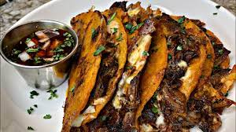

Birria Tacos

A Nummy Wummy Yummy Recipe That's Almost Addicting
Birria is a savory Mexican beef or goat stew that is slow cooked until
the meat is tender. That stew in then tossed into a taco shell with cheese
and condiments for a delicous combo.
Traditionally birria is made with goat meat but this recipes calls
for short ribs, which are more tender and flavorful.
Ingredients
- 4 dried guajillo chiles
- 2 dried pasilla chiles
- 2 cups boiling beef broth (chicken is absolutely okay too)
- 3 pounds boneless short rib
- 1 yellow onion
- 6 cloves garlic, minced
- 3 tbs apple cider vineagar
- 1 tbs oregano
- 1 tsp cumin
- 2 tsps coriander
- 2 chipotle chiles in adobo sauce
- kosher salt and pepper
- 15 oz can diced fire roasted tomamtoes
- corn tortillas
- oxaca cheese
- diced white onion
- chopped cilantro
Steps
- Preheat oven to 350
- Remove stems and seeds from chiles and put into a blender, add the boiling broth and cover
- Meanwhile, season the beef well with salt & pepper, and sear in 2 batches in a hot oven proof pot - remove to a plate and repeat with remaining beef
- To the empty pot, add the onions with a little more oil and cook until softened, about 5 minutes
- Add the vinegar, scraping up the bits on the bottom and allow about 1/2 of the vinegar to evaporate - then add garlic and when fragrant, about 45 seconds later add the beef back in and take off the heat
- To the softening chiles add the oregano, cumin, coriander, chipotles, salt & pepper and diced tomatoes
- Blend until very smooth and pour over beef in pot - the beef should be covered and if not add a little more broth
- Cover, and place in the oven until fork tender and shredable - approx 2 to 2.5 hours
- For tacos: dip a tortilla in some of the cooking liquid and place on flattop and when it starts getting a little brown, add some beef and shredded cheese, fold over and cook until getting crispy on both sides
- Remove, open up carefully and add onion and cilantro and eat